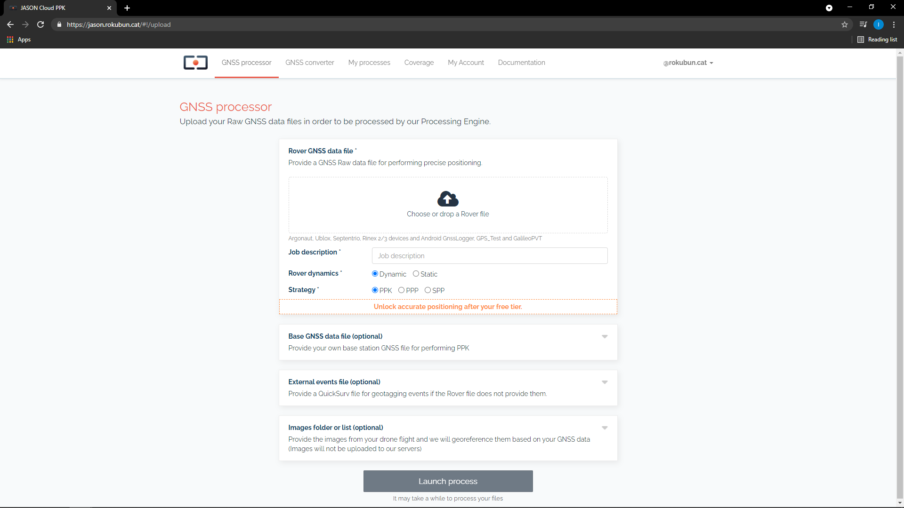
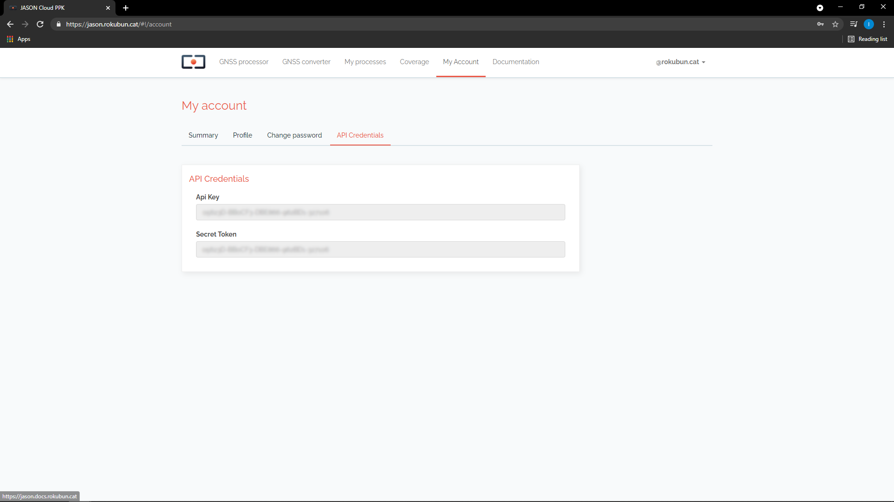

Manual
Processing engine
Under the hood, Jason runs the open-source package rtklib as the positioning engine, whilst Rokubun positioning engine is getting ready for deployment. This service works on a best-effort basis, and attempts to run these processing strategies in the following prioritized order:
- Post Processed Kinematic (PPK), Jason computes a coarse estimate of the rover position using SPP in order to have a rough estimate of the receiver position and be able to automatically select the closest base station from the set of stations continuously monitored by Jason. If a nearby station is found (less than a certain baseline), then the corresponding RINEX data is downloaded in order to perform differential positioning. Alike, if you provide Jason with a base station measurements file, it will undergo PPK technique processing.
- Precise Point Positioning (PPP), if no nearby base station is found, Jason will attempt PPP if the precise orbits and clocks for the day to be processed are found and the input data is multi-frequency.
- Single Point Positioning (SPP), if PPP failed, the data processed using the broadcast orbits and clocks will be delivered.
Supported formats
Jason supports the following input formats to input GNSS observables (pseudorange, carrier-phases, ...):
- Rinex 2/3
- ublox formats (both single and multiple frequency formats). Data from chipsets such as NEO-M8T or ZED-F9P are supported. This obviously cover also all GNSS receivers that use these chipsets (e.g. Drotek, EMLID receivers, ArduSimple, ...)
- Data from Rokubun's receivers (Argonaut and Medea, which are Ublox-based, but also adding IMU and Event data)
- Google's Android GNSS logger (smartphone data)
- GPS Test app (smartphone data)
- GalileoPVT app (smartphone data)
- RTCM 3 data
- Septentrio binary (SBF) files
API
For workflows that require to process several GNSS files in batch, Jason provides an Application Programming Interface (API) that allows to automate the complete processing or to include the positioning estimation step in your application pipeline (for example automated photogrammetry software).
In fact, Jason is fully implemented as an API and the front-end simply uses it. The API allows that you to e.g. program tasks in Jason using URLs via the command line of your Operating System or create plugins.
The full Swagger documentation of the API can be accessed here.
For Android devices you can see how it's used in the GithHub repository.
Launching a process
Let' assume you have a GNSS data file in RINEX format named GARR2150.15o that
you wish to process. Let's also assume you have your API key and secret token
ready (fetch them in your user section):
``` bash tab="Bash" export APIKEY="jason_api_key_here" export SECRET_TOKEN="your_secret_token_here"
file="GARR2150.15o" url="https://api.jason.rokubun.cat/api/processes/"
curl -X POST -H "accept: application/json" \ -H "Content-Type: multipart/form-data" \ -H "ApiKey: ${APIKEY}" \ -F token=${SECRET_TOKEN} -F type=GNSS \ -F "rover_file=@s${file}" ${url}
```py3 tab="Python"
import requests
APIKEY="jason_api_key_here"
SECRET_TOKEN="your_secret_token_here"
file = 'GARR2150.15o'
url='https://api.jason.rokubun.cat/api/processes'
headers = {
'accept': 'application/json',
'ApiKey': APIKEY,
}
files = {
'type' : (None, "GNSS"),
'token' : (None, SECRET_TOKEN),
'rover_file': (file, open(file, 'rb'))
}
r = requests.post(url, headers=headers, files=files)
```java tab="Android"
Context context;
JasonClient jasonClient = JasonClient.getInstance(context);
ProcessInformation processInformation;
// You should perform login before submiting a process with username and password
jasonClient.loging(username, password);
// Or you can login by settign the token
jasonCLient.login(token)
Single
Now the process is being run in Rokubun's servers. The previous command replies
with a small JSON formatted string with the status of the command (success
indicates that the process has been correctly launched) and the process id that
has been assigned (in this example the process id is 707):
```json
{"message":"success","id":707}
You can check the status of the process at any time under the tab My processes in your user area of the front-end or, alternatively with this curl command (that will answer with a JSON string):
```bash tab="Bash"
process_id="707" url="https://api.jason.rokubun.cat/api/processes/${process_id}"
curl -X GET -H "ApiKey: ${APIKEY}" \ -H "accept: application/json" "${url}?token=${SECRET_TOKEN}"
```py3 tab="Python"
import requests
process_id=3145
url='https://api.jason.rokubun.cat/api/processes/{}'.format(process_id)
headers = {
'accept': 'application/json',
'ApiKey': APIKEY
}
r = requests.get(url, headers=headers, params={ 'token' : SECRET_TOKEN })
```java tab="Android" Context context; JasonClient jasonClient = JasonClient.getInstance(context);
String processId=3145 Long maxTimeoutMillis = 60000L ProcessStatus processStatus;
Observable
processStatus.map(process -> processStatus = new ProcessStatus(process.processLog, process.processResult))
// When process is finished you can get a specific result processStatus.processResult.getSppKmlUrl() processStatus.processResult.getPreciseCsvUrl() ... // Or can download results file processStatus.processResult.getZipUrl()
The JSON string will give details on the run as well as any log messages that
describe what is being done with the file (PPK, PPP, SPP, ... depending on the
data availability). A sample is shown below:
```json
{
"process": {
"id": 707,
"user_id": 24,
"type": "GNSS",
"status": "RUNNING",
"source_file": "https://argonaut-files.s3.eu-central-1.amazonaws.com/source_files/258ab2a88691ad7cb47d91a832e13aa8/GARR2150.15o",
"source_base_file": null,
"camera_metadata_file": null,
"created": "2018-02-07 14:33:38",
"finished": null
},
"log": [
{
"id": 1630,
"process_id": 707,
"level": "INFO",
"message": "[GARR2150.15o] file successfully loaded\n",
"created": "2018-02-07 14:33:42"
},
{
"id": 1631,
"process_id": 707,
"level": "INFO",
"message": "[Broadcast] orbits successfully downloaded\n",
"created": "2018-02-07 14:33:45"
},
...
Downloading the results file
Once the status of the process is finished ("status": "FINISHED", under
"process"), the JSON response generated by the previous command will contain,
at the end, the link to the zipped result file with the result of the process:
...
{
"id": 2043,
"process_id": 707,
"url": "https://argonaut-files.s3.eu-central-1.amazonaws.com/results/1589edb715ebbe117bbdefe5e44192e2/results.zip",
"created": "2018-02-07 14:34:28",
"name": "results.zip",
"extension": "zip"
}
]
}
You can download the results file via the browser, using Android version or, if you want to automate the process, use Bash scripting, like so:
wget `json2yaml response.json | awk '/url/&&/results.zip/{print $2}'`
(note that you will need the tool json2yaml for that to work)
You can also use Python to automate this and download the results file (results.zip):
``` py3 tab="Python" import json import urllib.request
with open("response.json") as fp: res = json.load(fp)
url = res["results"][-1]["url"] urllib.request.urlretrieve(url)
## Result files
This section include the information of the various file formats delivered by
Jason.
### GNSS processor files
When a process has been successful, a compressed (ZIP) file is generated with all the
results of the process. The format of the different files included in the bundle
by the GNSS processor are described in the following sub-sections.
#### Position files (csv)
Positions will be delivered as a comma separated file where the first line is
a comment (starts with `#`) with a description of the fields, which are:
- columns 1-2: **Epoch** of the solution, expressed as GPS week and seconds within the GPS week.
- columns 3-5: **Position** longitude and latitude expressed in decimal degrees and height in
meters above the ellipsoid.
- columns 6-8: Standard deviation in meters of the North, East and Up components.
Note that these values are the formal **errors** delivered by the
position filter (i.e. square root of the postfit variances) and
they do not necessarily reflect the actual error in the
navigation solution. The surveyor will need an external reference
to compute the actual error. However, these values can be
treated as a preliminary quality metrics of the solution.
Jason will always deliver the position file corresponding to the SPP
strategy (files ending with `_spp.csv`). If a more accurate strategy
(PPP or PPK) could be performed, additional CSV will be also delivered,
ending with either `_ppp.csv` or `_ppk.csv`, to indicate the strategy
of the solution.
Example:
```csv
# GPSW,GPSSoW,latitude(deg),longitude(deg),height(m),sdn(m),sde(m),sdu(m)
2069,124585.300000,41.3495230130,1.6680445200,246.06570,2.3403,1.5631,4.6059
2069,124585.400000,41.3495233800,1.6680436110,246.40920,2.3403,1.5631,4.6059
2069,124585.500000,41.3495239180,1.6680507170,246.51000,2.3403,1.5631,4.6058
2069,124585.600000,41.3495241180,1.6680519850,246.22500,2.3403,1.5631,4.6058
2069,124585.700000,41.3495263560,1.6680520780,246.36660,2.3403,1.5631,4.6058
2069,124585.800000,41.3495281560,1.6680502930,245.82960,2.3404,1.5631,4.6058
2069,124585.900000,41.3495297610,1.6680474000,245.42580,2.3404,1.5631,4.6058
Position files (kml)
For convenience, the positions are converted to KML format and included in the ZIP package as well. These files can be easily opened using tools such as Google Earth, just double-click on the files and the application will open the file.
Similarly to the case of the CSV files, the KML corresponding to the SPP strategy will be always delivered. If PPP or PPK has been successful, the KML files for this strategy will be also delivered. The strategy will be part of the file name.
In addition, for quick visualization, a decimated version of the KML file is also provided. This is useful for a quick preview of files that have been taken in long data campaigns.
In case of static receivers, only the last point of the processing will be included in the KML file.
Plots (png)
As a visual summary of the processing task, a series of plots (in PNG format) are also included in the bundle. These files are:
height.png: Time series of the height above the ellipsoid (in meters).skyplot.png: Skyplot showing the distribution of the satellites that have been used for the processing. The points in the plot have different color coding, depending on the constellation. Also, the satellite ID is also shown at the last point, which is a helper to know the direction to which the satellite moved.num_satellites.png: The time series of the number of satellite during the processing. The same color coding used in the skyplot has been used here. The chart is a stack plot and shows the number of satellites, at each epoch, of each constellation.
Time/Camera events (csv)
In the event that the input contained time events (usually generated from
camera trigger), the output package will also contain a camera event file
camera_events.csv. The file contains as many rows as time triggers (camera
events) detected in the input file. Each row of the file contains the time tag,
position and formal error of the camera event, with the same format as
described above for the Position CSV files.
User section
In order to go to your user area, point to the top-right part of the page, where your e-mail address is displayed, and click on the arrow. A drop-down menu will be displayed. Then click "My Account" as shown in the screenshot below.

In your account you will find 3 areas:
- Profile where you will be able to set your Name and e-mail address.
- Change password, to reset your password.
- Software, where you will be able to fetch your API key, as shown below.
How to obtain your API key
In order to use the PaaS API, you will need both the API key and your secret user token. While the API key identifies our PaaS and is common across all users, the secret token is your ID and will link each process you request with your account.
Once in your area, click on the Software tab. In this tab you will find both the API key and secret token that you need.
